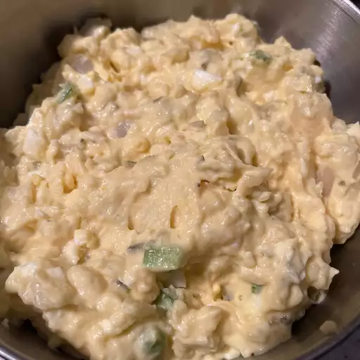

Potato Salad

Description
This Southern potato salad includes eggs, celery, and relish and should be served warm.
Ingredients
- 4 potatoes
- 4 large eggs
- 1/2 cup mayonnaise
- 1/2 stalk celery, chopped
- 1/4 cup sweet relish
- 1 clove garlic, minced
- 2 tablespoons prepared mustard
- Salt and pepper to taste
Steps
- Gather all ingredients.
- Bring a large pot of salted water to a boil. Add potatoes and cook until tender but still firm, about 15 minutes; drain and chop.
- At the same time, place eggs in a saucepan and cover with cold water. Bring water to a boil; cover, remove from heat, and let eggs stand in hot water for 10 to 12 minutes. Remove from hot water; peel and chop.
- Combine cooked potatoes and eggs with mayonnaise, celery, relish, garlic, mustard, salt, and pepper in a large bowl.
- Gently mix together and serve warm.